Informasi kegiatan, prestasi, dan berbagai aktivitas terbaru SDN Ngletih 1.
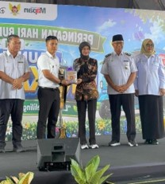
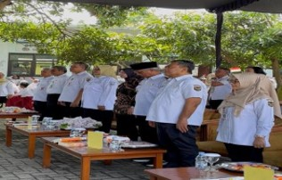
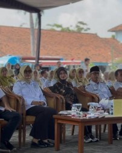
Kediri – SD Negeri Ngletih 1 menjadi tuan rumah kegiatan Peringatan Hari Buku Internasional dan Launching Lingkar Dalam (Literasi Keliling Energi Baru Kota Kediri) yang diselenggarakan oleh Dinas Kearsipan dan Perpustakaan (Disarpus) Kota Kediri. Kegiatan ini dihadiri oleh Wakil Wali Kota Kediri, Qowimuddin, S.Pd.I., Kepala Dinas Kearsipan dan Perpustakaan Kota Kediri, jajaran OPD, kepala sekolah, guru, serta peserta didik dari SD Negeri Ngletih 1.
Acara diawali dengan pembukaan dan menyanyikan lagu Indonesia Raya, dilanjutkan sambutan dari para tamu undangan. Pada kesempatan tersebut juga dilaksanakan Launching Lingkar Dalam, sebuah inovasi layanan literasi keliling yang bertujuan mendekatkan akses membaca kepada masyarakat Kota Kediri. Suasana semakin semarak dengan penampilan siswa yang membacakan puisi bertema literasi serta berbagai pertunjukan yang menunjukkan kreativitas peserta didik dalam mendukung gerakan gemar membaca. Selain peluncuran program, Wakil Wali Kota Kediri menyerahkan buku secara simbolis dan mengajak seluruh peserta didik untuk menjadikan membaca sebagai kebiasaan sehari-hari demi membangun generasi yang cerdas dan berkarakter. Kegiatan dilanjutkan dengan kunjungan ke stan pameran karya literasi siswa. Wakil Wali Kota berdialog dengan para peserta didik, memberikan motivasi, serta mengapresiasi hasil karya dan kreativitas mereka Antusiasme peserta didik terlihat saat mengikuti seluruh rangkaian kegiatan, mulai dari menyaksikan pertunjukan, mengunjungi pameran lit erasi, hingga berinteraksi langsung dengan Wakil Wali Kota Kediri.
Kegiatan ditutup dengan sesi wawancara bersama media dan harapan agar Gerakan Literasi Sekolah terus berkembang melalui kolaborasi antara pemerintah, sekolah, dan masyarakat Semoga melalui kegiatan ini budaya membaca semakin tumbuh di lingkungan sekolah dan masyarakat, sehingga mampu melahirkan generasi yang gemar membaca, kreatif, dan siap menghadapi tantangan masa depan.
Saksikan video lengkap kemeriahan Peringatan Hari Buku Internasional dan Launching LINGKAR Kediri melalui kanal YouTube SD Negeri Ngletih 1 pada tautan berikut: https://www.youtube.com/@sdnngletih1
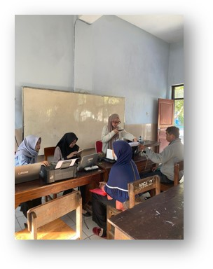
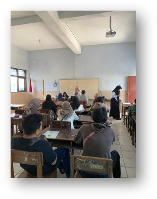
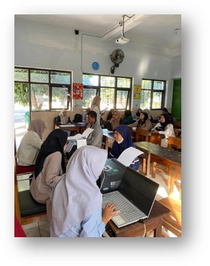
Kediri – SDN Ngletih 1 telah sukses melaksanakan rangkaian Sistem Penerimaan Murid Baru (SMPB) Tahun Ajaran 2026/2027 dengan lancar, tertib, transparan, dan akuntabel. Melalui proses penerimaan yang dilaksanakan sesuai ketentuan, sebanyak 56 peserta didik baru resmi diterima dan siap mengawali perjalanan belajar di SDN Ngletih 1.
Selama pelaksanaan SMPB, panitia memberikan layanan terbaik melalui kegiatan sosialisasi jalur penerimaan, penjelasan tata cara pendaftaran, pendampingan kepada orang tua/wali, serta verifikasi dan validasi berkas calon peserta didik. Seluruh tahapan dilakukan secara terbuka agar masyarakat memperoleh informasi yang jelas, mudah dipahami, dan dapat diakses oleh semua calon peserta didik.
Selamat datang kepada 56 peserta didik baru di keluarga besar SDN Ngletih 1. Bersama, mari wujudkan lingkungan belajar yang nyaman, aman, dan penuh prestasi.
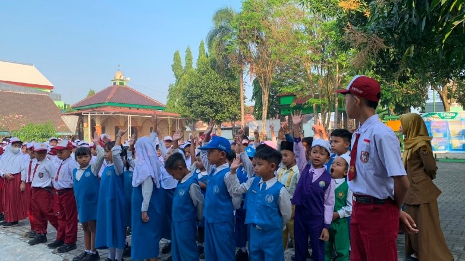
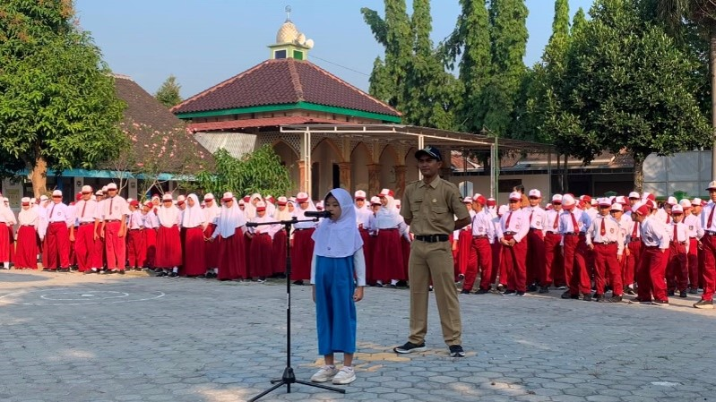
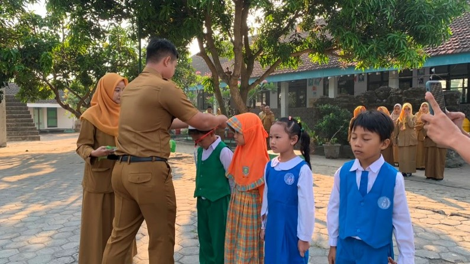
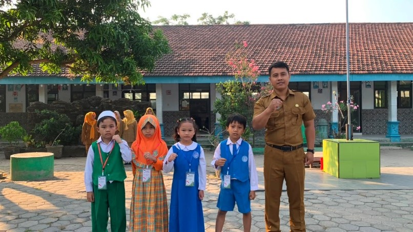
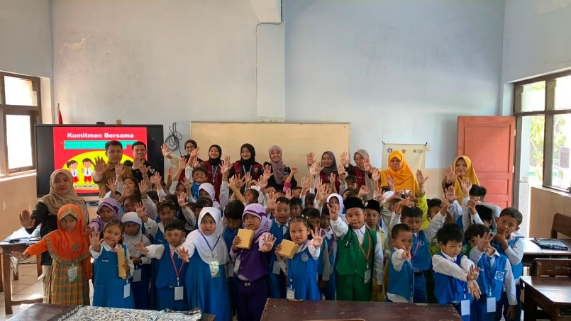
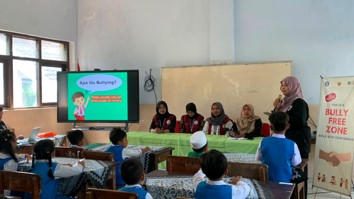
Kediri, 13 Juli 2026 – SDN Ngletih 1 secara resmi mengawali pelaksanaan Masa Pengenalan Lingkungan Sekolah (MPLS) Tahun Ajaran 2026/2027 pada Senin (13/7). Kegiatan berlangsung dengan tertib, meriah, dan penuh semangat sebagai langkah awal dalam menyambut peserta didik baru sekaligus mengenalkan lingkungan sekolah yang aman, nyaman, dan ramah anak.
Rangkaian kegiatan diawali dengan upacara pembukaan yang dipimpin langsung oleh Kepala SDN Ngletih 1. Dalam amanatnya, Kepala Sekolah menyampaikan ucapan selamat datang kepada seluruh peserta didik baru serta memberikan motivasi agar mereka mengikuti proses belajar dengan penuh semangat, disiplin, dan menjunjung tinggi nilai-nilai karakter.
Sebagai bentuk apresiasi terhadap prestasi dan partisipasi peserta didik, sekolah juga menyerahkan hadiah kepada siswa berprestasi dan aktif. Momen tersebut menjadi penyemangat bagi seluruh peserta didik untuk terus mengembangkan potensi dan meraih prestasi di bidang akademik maupun nonakademik.
Kegiatan berikutnya adalah pemasangan kartu identitas (ID Card) secara simbolis kepada peserta didik baru. Pemasangan ID Card ini menjadi simbol resmi bergabungnya para siswa sebagai bagian dari keluarga besar SDN Ngletih 1 sekaligus menumbuhkan rasa bangga dan memiliki terhadap sekolah.
Sebagai penutup kegiatan hari pertama, SDN Ngletih 1 bekerja sama dengan instansi perlindungan anak dalam memberikan edukasi mengenai pencegahan perundungan (bullying), pentingnya saling menghargai, serta menciptakan lingkungan sekolah yang aman, nyaman, inklusif, dan ramah anak. Materi tersebut diharapkan dapat membangun karakter peserta didik sejak dini serta mewujudkan budaya sekolah yang positif.
Seluruh rangkaian kegiatan MPLS hari pertama berjalan dengan lancar berkat kerja sama seluruh guru, tenaga kependidikan, orang tua, serta mitra dari instansi perlindungan anak. Melalui pelaksanaan MPLS ini, SDN Ngletih 1 berharap seluruh peserta didik baru dapat beradaptasi dengan baik, mengenal lingkungan sekolah, serta tumbuh menjadi generasi yang berkarakter, berprestasi, dan berakhlak mulia.
Kediri, 13 Juli 2026 – SDN Ngletih 1 secara resmi mengawali pelaksanaan Masa Pengenalan Lingkungan Sekolah (MPLS) Tahun Ajaran 2026/2027 pada Senin (13/7). Kegiatan berlangsung dengan tertib, meriah, dan penuh semangat sebagai langkah awal dalam menyambut peserta didik baru sekaligus mengenalkan lingkungan sekolah yang aman, nyaman, dan ramah anak.
Rangkaian kegiatan diawali dengan upacara pembukaan yang dipimpin langsung oleh Kepala SDN Ngletih 1. Dalam amanatnya, Kepala Sekolah menyampaikan ucapan selamat datang kepada seluruh peserta didik baru serta memberikan motivasi agar mereka mengikuti proses belajar dengan penuh semangat, disiplin, dan menjunjung tinggi nilai-nilai karakter.
Sebagai bentuk apresiasi terhadap prestasi dan partisipasi peserta didik, sekolah juga menyerahkan hadiah kepada siswa berprestasi dan aktif. Momen tersebut menjadi penyemangat bagi seluruh peserta didik untuk terus mengembangkan potensi dan meraih prestasi di bidang akademik maupun nonakademik.
Kegiatan berikutnya adalah pemasangan kartu identitas (ID Card) secara simbolis kepada peserta didik baru. Pemasangan ID Card ini menjadi simbol resmi bergabungnya para siswa sebagai bagian dari keluarga besar SDN Ngletih 1 sekaligus menumbuhkan rasa bangga dan memiliki terhadap sekolah.
Sebagai penutup kegiatan hari pertama, SDN Ngletih 1 bekerja sama dengan instansi perlindungan anak dalam memberikan edukasi mengenai pencegahan perundungan (bullying), pentingnya saling menghargai, serta menciptakan lingkungan sekolah yang aman, nyaman, inklusif, dan ramah anak. Materi tersebut diharapkan dapat membangun karakter peserta didik sejak dini serta mewujudkan budaya sekolah yang positif.
Seluruh rangkaian kegiatan MPLS hari pertama berjalan dengan lancar berkat kerja sama seluruh guru, tenaga kependidikan, orang tua, serta mitra dari instansi perlindungan anak. Melalui pelaksanaan MPLS ini, SDN Ngletih 1 berharap seluruh peserta didik baru dapat beradaptasi dengan baik, mengenal lingkungan sekolah, serta tumbuh menjadi generasi yang berkarakter, berprestasi, dan berakhlak mulia.
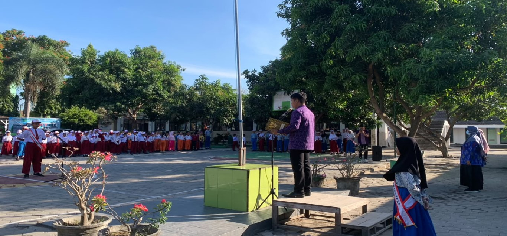
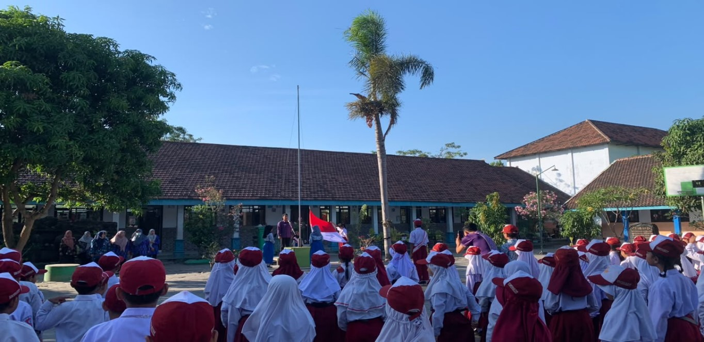
Kediri, Kamis, 23 Juli 2026 – Dalam rangka memperingati Hari Anak Nasional (HAN), SDN Ngletih 1 menggelar serangkaian kegiatan yang diikuti oleh seluruh siswa. Kegiatan diawali dengan pelaksanaan apel pagi di halaman sekolah yang berlangsung dengan tertib dan penuh semangat.
Pada kesempatan tersebut, para guru menyampaikan pesan tentang pentingnya Hari Anak Nasional sebagai momentum untuk menghargai, melindungi, dan memenuhi hak-hak anak. Selain itu, siswa juga diajak untuk terus belajar, berprestasi, saling menghormati, serta menerapkan nilai-nilai karakter positif dalam kehidupan sehari-hari.
Usai apel, kegiatan dilanjutkan dengan pengenalan berbagai permainan tradisional Indonesia. Para siswa dikenalkan pada permainan yang telah menjadi bagian dari budaya bangsa, seperti engklek, gobak sodor, egrang batok, lompat tali, dan permainan tradisional lainnya. Melalui kegiatan ini, siswa tidak hanya bermain dengan gembira, tetapi juga belajar tentang kerja sama, sportivitas, kebersamaan, serta pentingnya melestarikan warisan budaya Indonesia di tengah perkembangan teknologi.
Rangkaian peringatan Hari Anak Nasional kemudian dilanjutkan dengan kegiatan mewarnai bertema Hari Anak Nasional. Seluruh siswa mengikuti kegiatan ini dengan penuh antusias dan kreativitas. Beragam hasil karya yang penuh warna menunjukkan imajinasi serta kemampuan seni yang dimiliki oleh para peserta didik.
Suasana sekolah tampak meriah dengan keceriaan para siswa yang menikmati setiap rangkaian kegiatan. Guru-guru turut mendampingi dan memberikan semangat sehingga seluruh kegiatan berjalan dengan lancar, tertib, dan menyenangkan
Kepala SDN Ngletih 1 menyampaikan bahwa peringatan Hari Anak Nasional bukan sekadar kegiatan seremonial, tetapi juga menjadi sarana untuk menanamkan nilai-nilai karakter, menumbuhkan rasa cinta terhadap budaya bangsa, serta memberikan ruang bagi anak-anak untuk berekspresi, berkarya, dan bermain dengan gembira.
Melalui kegiatan ini, SDN Ngletih 1 berharap seluruh peserta didik dapat tumbuh menjadi anak-anak yang sehat, cerdas, kreatif, berkarakter, serta bangga terhadap budaya Indonesia. Semangat Hari Anak Nasional diharapkan terus menginspirasi seluruh warga sekolah untuk menciptakan lingkungan belajar yang aman, nyaman, ramah anak, dan mendukung tumbuh kembang peserta didik secara optimal.
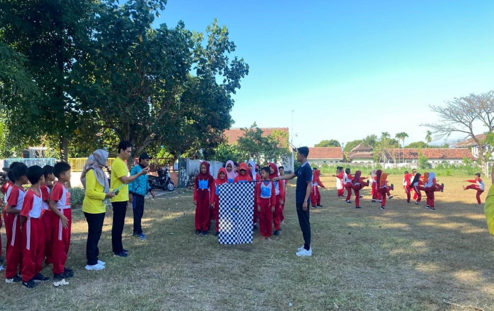
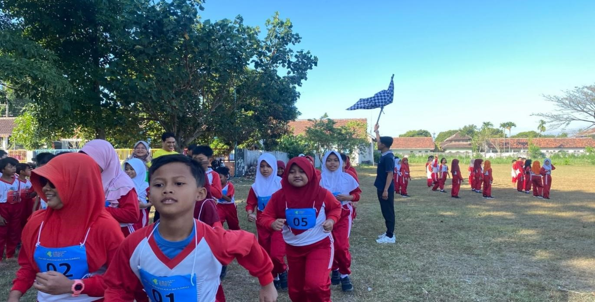
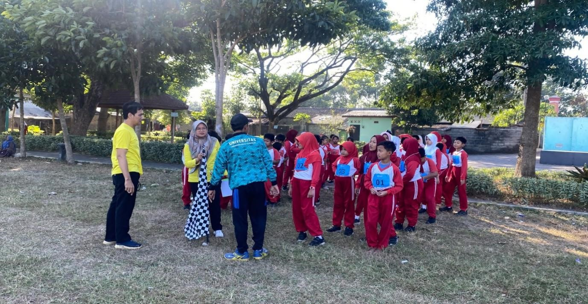
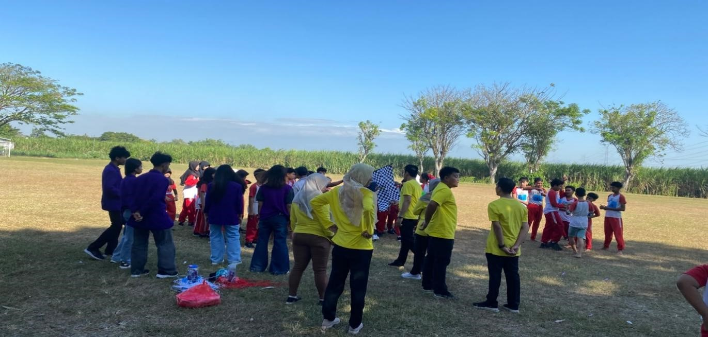
Kediri – RABU, 29 Juli 2026 SDN Ngletih 1 menggelar kegiatan tes kebugaran jasmani yang diikuti oleh seluruh siswa di Lapangan Ngletih. Kegiatan ini merupakan hasil kerja sama antara SDN Ngletih 1 dengan Puskesmas Ngletih sebagai upaya untuk memantau sekaligus meningkatkan kesehatan dan kebugaran peserta didik.
Dalam kegiatan tersebut, para siswa mengikuti berbagai rangkaian tes kebugaran dengan penuh semangat dan antusias. Tes dilakukan untuk mengetahui tingkat kebugaran jasmani siswa sehingga dapat menjadi dasar dalam pembinaan kesehatan dan aktivitas fisik di lingkungan sekolah.
Petugas dari Puskesmas Ngletih turut mendampingi jalannya kegiatan dengan memberikan arahan serta melakukan penilaian sesuai prosedur. Kolaborasi ini menjadi wujud sinergi antara sekolah dan fasilitas kesehatan dalam mendukung tumbuh kembang anak yang sehat, aktif, dan bugar.
Kepala sekolah berharap kegiatan tes kebugaran ini dapat menumbuhkan kesadaran siswa akan pentingnya menjaga kesehatan melalui olahraga dan pola hidup sehat. Selain itu, hasil tes diharapkan menjadi bahan evaluasi bagi sekolah dan orang tua dalam mendukung perkembangan fisik peserta didik.
Kegiatan berlangsung dengan tertib, lancar, dan penuh semangat. Melalui kemitraan antara SDN Ngletih 1 dan Puskesmas Ngletih, diharapkan program kesehatan sekolah dapat terus ditingkatkan demi menciptakan generasi yang sehat, kuat, dan berprestasi.